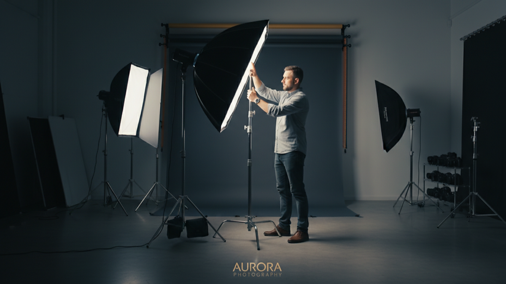
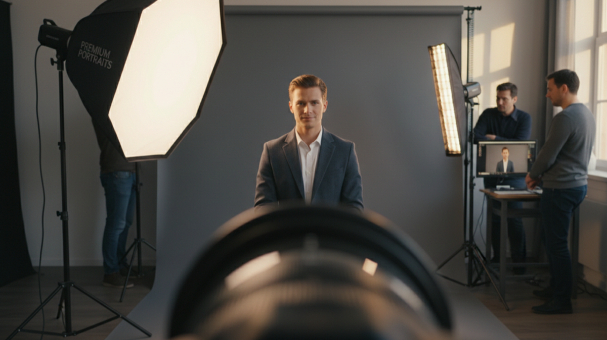

Perfecting Professional Headshot Tips in El Paso
When it comes to making a strong first impression, your professional headshot plays a crucial role.

When it comes to making a strong first impression, your professional headshot plays a crucial role. Whether you're updating your LinkedIn profile, building your personal brand, or preparing for a corporate website, a polished headshot can set you apart. In El Paso, where the professional scene is vibrant and diverse, getting the perfect shot requires more than just showing up with a smile. I’ve learned that with the right approach, anyone can achieve a headshot that truly reflects their professionalism and personality.
Why Professional Headshot Tips Matter
A professional headshot is more than just a photo. It’s a visual handshake, a way to communicate confidence, approachability, and competence before you even say a word. Many people underestimate the power of a well-crafted headshot, but it can open doors to new opportunities and connections.
Here are some reasons why investing time and effort into your headshot is worth it:
- First impressions count: People form opinions quickly, and your photo is often the first thing they see.
- Consistency across platforms: A professional headshot ensures your image is consistent on LinkedIn, company websites, and social media.
- Reflects your personal brand: Your photo should align with the message you want to send about your professionalism and style.
By following some straightforward tips, you can make sure your headshot works for you, not against you.
Essential Professional Headshot Tips for a Standout Image
Getting the perfect professional headshot involves more than just showing up in front of a camera. Here are some practical tips I always recommend to help you look your best:
1. Choose the Right Outfit
Your clothing should be simple, clean, and professional. Avoid busy patterns or overly bright colors that can distract from your face. Solid colors like navy, gray, or white work well. If you’re unsure, bring a couple of options to your shoot and ask the photographer for advice.
2. Grooming and Makeup
Make sure your hair is neat and styled the way you prefer. For makeup, keep it natural and polished. The goal is to enhance your features without looking overdone. Men should consider a clean shave or well-groomed facial hair.
3. Mind Your Posture
Good posture conveys confidence. Stand or sit up straight with your shoulders back. Avoid slouching or leaning too far forward. A slight tilt of the head can add warmth and approachability.
4. Relax and Be Yourself
It’s normal to feel nervous in front of the camera, but try to relax. Take deep breaths and think about something that makes you happy or confident. A genuine smile always looks better than a forced one.
5. Lighting and Background
Natural light is often the most flattering, but professional photographers know how to use studio lighting to highlight your best features. Choose a background that is simple and uncluttered to keep the focus on you.
By keeping these tips in mind, you’ll be well on your way to a headshot that truly represents your professional self.
How to Prepare for Your Headshot Session
Preparation is key to a successful headshot session. Here’s a checklist I follow to make sure everything goes smoothly:
- Rest well the night before: A good night’s sleep helps reduce puffiness and dark circles.
- Hydrate: Drink plenty of water to keep your skin looking fresh.
- Avoid new skincare products: Stick to your usual routine to prevent unexpected reactions.
- Plan your outfit in advance: Try on your clothes and make sure they fit well.
- Communicate with your photographer: Share your goals and preferences so they can tailor the session to your needs.
Arriving prepared will help you feel confident and relaxed, which shows in your photos.
Finding the Right Photographer in El Paso
Choosing the right photographer is just as important as preparing yourself. A skilled photographer understands how to capture your best angles and create a comfortable environment. When searching for headshots el paso, look for someone who:
- Has a strong portfolio of professional headshots.
- Understands your industry and the image you want to project.
- Offers a clear pricing structure and turnaround time.
- Provides guidance on wardrobe, poses, and expressions.
Don’t hesitate to ask for references or read reviews. A good photographer will make the process enjoyable and deliver images you’re proud to share.

Making the Most of Your Professional Headshot
Once you have your headshot, it’s important to use it effectively. Here are some ways to maximize its impact:
- Update your LinkedIn profile: A current, professional photo can increase profile views and connection requests.
- Use it on your company website: Help clients and colleagues put a face to your name.
- Include it in your email signature: Adds a personal touch to your communications.
- Share on social media: Reinforce your personal brand across platforms.
- Print business cards with your photo: Makes networking more memorable.
Remember, your headshot is a tool to support your professional journey. Keep it updated every few years or when your appearance changes significantly.
Your Next Step Toward a Professional Image
Perfecting your professional headshot in El Paso is an investment in your career. With the right preparation, photographer, and mindset, you can create an image that opens doors and builds trust. Take the time to plan your session carefully, and don’t settle for anything less than a photo that truly represents your best self.
If you’re ready to elevate your professional presence, start by exploring options for headshots el paso. Your future self will thank you for it.